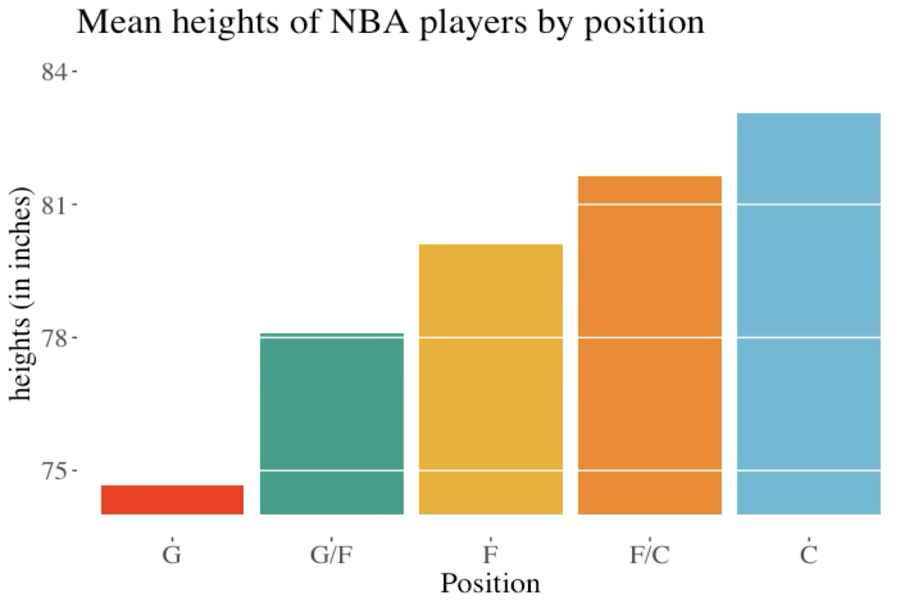
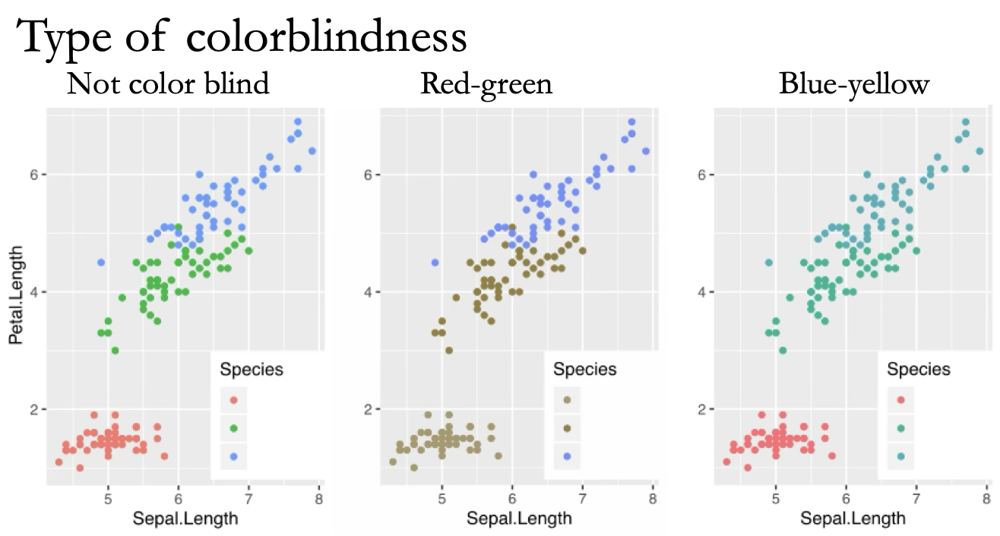
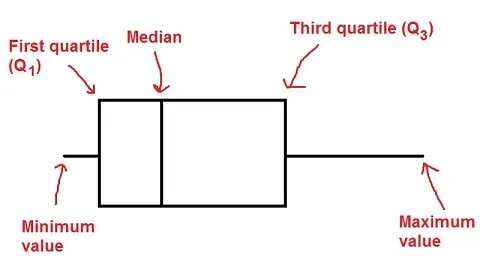
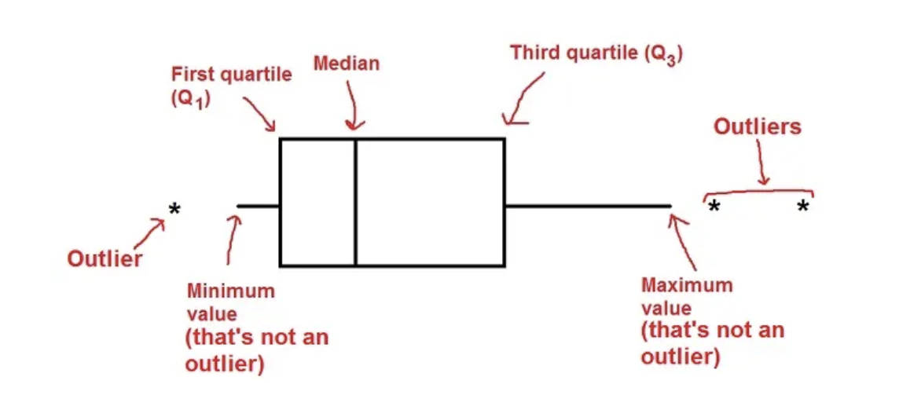

2.6.Displaying & Describing Data
Plots and Tables
Keywords
Making good plots
Outline
- Wrap-up: Rules of data visualization - principles of good plots
Problem? 👎
Lifespan by body size in mammals, data from Allison & Cicchetti 1976
Transform Data to Reveal Patterns 👍

Mistakes in displaying data:
- Displayig Magnitudes Dishonestly
Problem?

Presenting magnitudes dishonestly
- This plot suggests that centers are 20X taller than guards.
How to represent magnitudes dishonestly: 👎
- Start bar plots at a non-zero value
How to represent magnitudes honestly: 👍
- Start bar plots at zero (if the variable starts at zero)
Why? The height of a bar plot makes us think in magnitudes.
Mistakes in displaying data:
- Draw elements unclearly
Problem? 👎

- x-axis labels obscure one another.
👍 Flip Axes to Present Graphics Clearly

👍 Clear Graphics for Everyone
Consider your audience

Colorblind simulator: www.color-blindness.com/coblis-color-blindness-simulator/
Direct Labelling May Clarify Graphics

Labels directly on plots may also help with clarifying patterns
How to draw graphical elements unclearly: 👎
Unthinkingly accept default options from plotting programs
Do not consider how a diverse audience will consume your figure
How to draw graphical elements clearly: 👍
Reflect on plot design
Consider the diverse audience you are reaching and how they may interact with your plot
A note about boxplots
There is more than one way to define the whiskers in a boxplot
R (both base and ggplot) use the following. If there are no outliers, whiskers go up to max and min value
But how are outliers defined?
Case 1: If there are no outliers in the dataset
R uses the popular method of \(\text{lower fence}=Q1–1.5(IQR)\) and \(\text{upper fence}=Q3+1.5(IQR)\). If there are no values beyond these limits, it considers the dataset to not have outliers for the purposes of a boxplot:

Image: https://www.mathbootcamps.com/how-to-read-a-boxplot/
Case 2: there are outliers
If there are outliers, whiskers go up to \(Q3+1.5IQR\) and down to \(Q1-1.5IQR\) and outliers are shown as circles

Image: https://www.mathbootcamps.com/how-to-read-a-boxplot/
Please contribute!
A thread on plots that could use some TLC:
That’s all for today